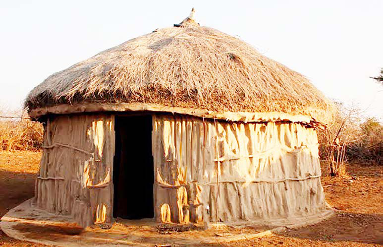

Vilevile, kuna nyumba za msonge zilizojengwa kwa miti iliyokandikwa kwa tope lililochanganywa na udongo kidogo na kinyesi cha wanyama chini, na kuezekwa juu kwa majani. Nyumba hizo zilijengwa na jamii za Wamasai. Kielelezo namba 11, kinawasilisha mfano wa nyumba hizo.

Zoezi namba 2
Chunguza picha za msonge katika kielelezo namba 5 hadi 11, kisha:
-
Swali la kwanza. Eleza mfanano wa nyumba hizo.
Swali la pili. Eleza tofauti ya nyumba hizo.